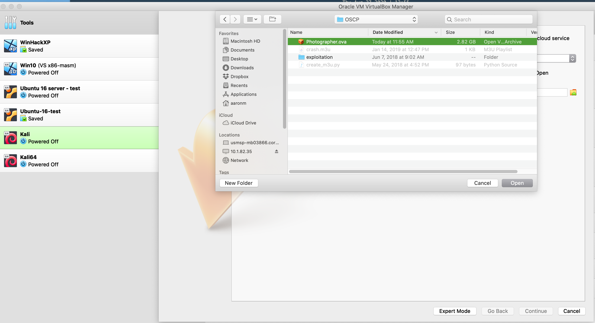
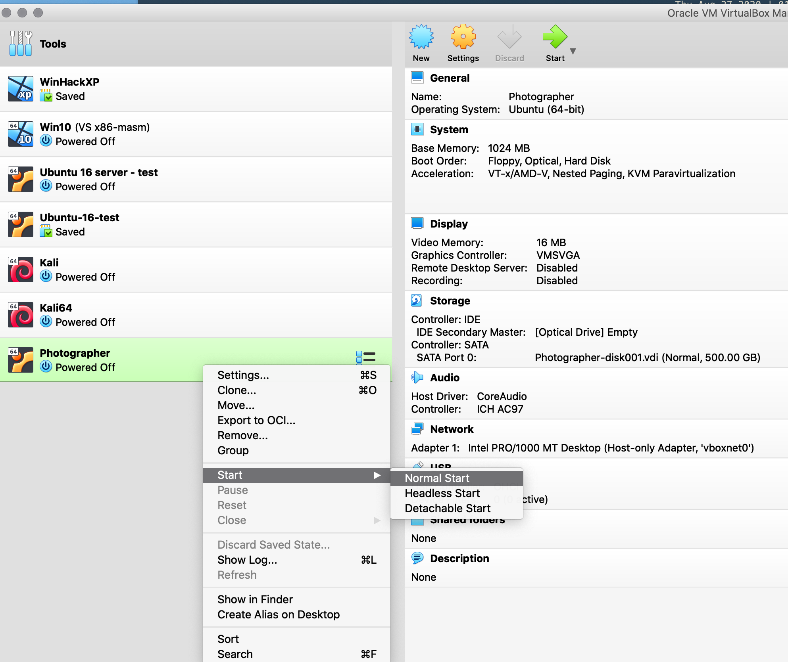
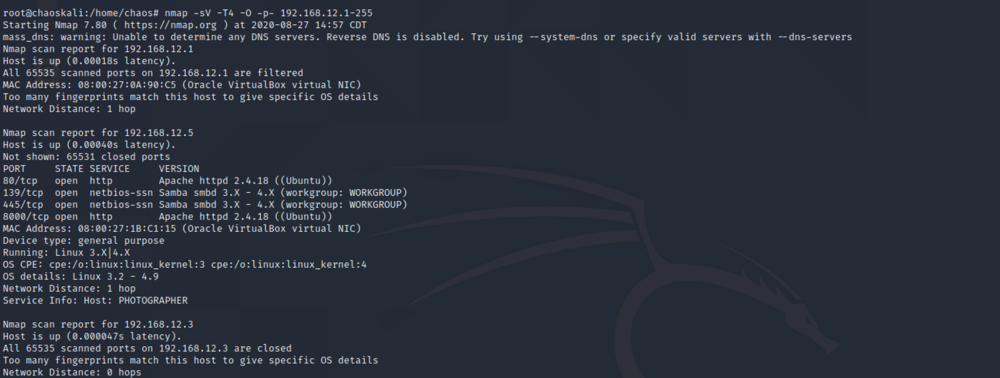
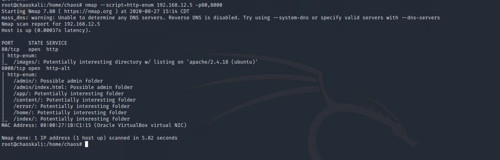
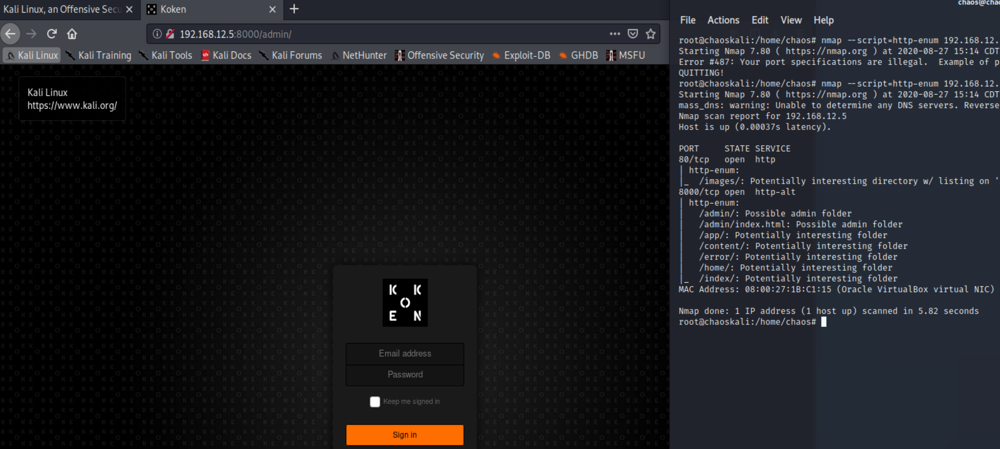
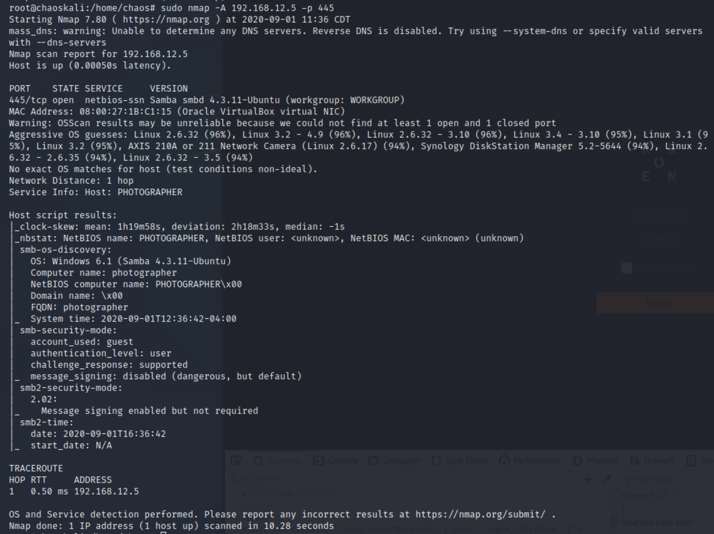
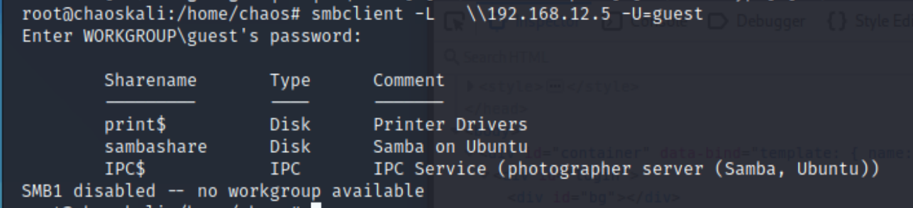
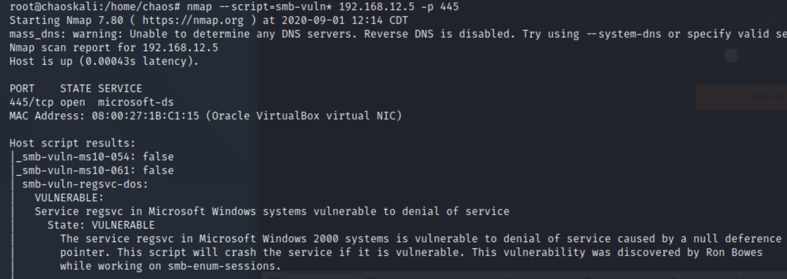
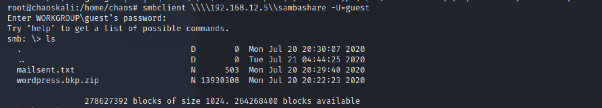
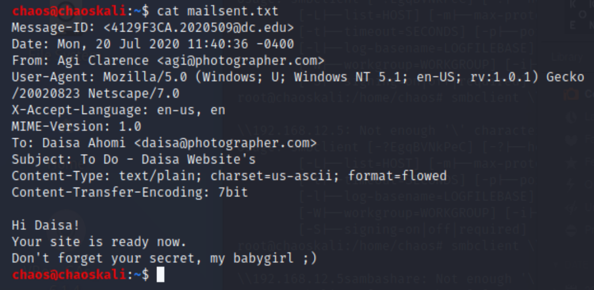

Journal Post #2
My journey continues of what I want to accomplish. My ultimate goal is to be the best.
Right now I have subscribed to PentesterAcademy, Hoppersroppers, Vulnerable By Design, Pentestit.
I am going to go through the Vulnerable Hub box first. The reason why I picked this box is because, eventually I want to take the OSCP and OSCE exam to get my certificate. So first things first download a Vulnerable Hub Box. I have picked the Photographer. The reason why is because if you do a search for "OSCP" you can find multiple boxes that pertain "or at least what people think pertain to the OSCP exam.
Instructions for downloading the "Photographer box"
- Download the vulnbox NOTE: From here on out I will refer to any vulnerable hub box as "vulnbox" here: VulnBox
- The Vulnbox is an .ova file , so you can open it with KVM, VirtualBox or VMware. I will be using VirtualBox for my VirtualMachine. (I will use VirtualBox for all of this tutorial)
- I won't tell you how to download and setup a lab environment , there are plenty of tutorials and step-by-step guides to do that. HINT: search on the net.
- Open up VirtualBox and go to File --> Import Applicance , Import Vulnbox "Photographer" into VirtualBox
 click open and click on Continue.
On the next screen change your settings to your fit , for instance I picked 1024 MB of ram, thats "1 Gb" of ram. Then click on "Import", if all goes ok , your applicance should be importing into the VirtualBox, WARNING: This might take a minute or two depening on your machine. (I will create a full tutorial later on how to create your own "secure" lab). 
-
Now that "Photographer" is running in a VirtualMachine we need a box (Operating System) to use in order to "Hack it". Well I know I said in the beginning of the first Blog post that I use BlackArch Linux and thats true Its my favorite pentesting OS. Although since the OSCP uses Kali Linux. Maybe in future journal entries I will use BlackArch instead, but for now we use Kali Linux. Also WARNING: I did install Kali Linux so I am able to do updates and use it for an attacher machine without having to actually boot it off a USB/ISO image every time.
-
Scan the photographer box via port scanning, So there are many different ways to port scan, most everyone uses a tool called nmap (network mapper). Netmap is a network mapper and much more since nmap now has the "NSE" Network scanning engine now.
So how do we use nmap for scanning a network or even finding the correct box?
nmap -sV -T4 -O -p- 192.168.12.1-255 Now I know the IP address of the subnet because that is what I have setup for the virtualbox network I created.
This command will Scan Services using a fast method (no need to use -sS stealth mode here) scan every port meaning (65,535) and try to tell us the operating system being used.
so it should look like this.

We see from the output we have four ports that are open.
80/tcp open http Apache httpd 2.4.18 (Ubuntu)
139/tcp open netbios-ssn Samba smbd 3.X - 4.X (workgroup)
445/tcp open netbios-ssn Samba smbd 3.X - 4.X (workgroup)
8000/tmp open Apache httpd 2.4.18 (Ubuntu)
Lets look more at tcp/80 and tcp/8000 , we see both ports are open and they are both running the Apache Server version 2.4.18
If you read the manual pages for nmap (man nmap) we can see that nmap has an option to run scripts.
lets look at a script called http-enum (which is Hyper text Transport Layer enumeration).
This script enumerates or tries to find out more information about a web server.
lets run the command nmap --script=http-enum 192.168.12.5 -p80,8000 and look at the output from nmap.

So this give us the enumeration of the web server. Plus the scripts does even more than that . If you look at the scan for tcp/8000 you will see directories like /admin/. So what does this mean? Since a web server acts like a file manager you can add whatever you want. Like a admin login page or debug page.
Lets take a look at tcp/80000 I will open up a web browser for this (Any of them will do)
Open up a web browser and type in 192.168.12.5:8000/admin

Ok... so we see a web page called Koken? So what is that?
Lets search for that name (a little search-Fu). So I found this Koken Image managment, so its a image management platform or a (CMS) customer management service.
So what can we do with this page? Well since its a HTML page and you can HTTP-POST to the page using the email and password field.
Lets leave this for now and look at another address we have enumerated.
192.168.12.5:80/images
Wow ok so we have full access to view all the images for this CMS ... interesting.
I wonder .. can we upload our own image? Lets try looking for page that has a upload form.
Lets try 192.168.12.5:80/content/
info: At this point in time I need to skip for this web app for now , its killing my VM for some reason.
Lets look at tcp/445 which is smb or (Server message block) is a file sharing protocol (SMB) allows applications on a computer to read and write to files. Refer to {Glossary} for more information.

As you can see we have quite a bit of information on this one service. We even see authentication guest/guest can be used to access. SMB2.0 is being used for protocol version.
Lets see if we can use guest/guest to log in. smbclient -L \\192.168.12.5 -U=guest

I wonder if there is an exploit for this version of smb? Lets check using a nmap script called (smb-vuln)
nmap --script=smb-vuln* 192.168.12.5 -p 445

So the only exploit we can find is a (DOS) which is a "Denial of service" attack, which we don't want to exploit because it will crash the system.
Lets try something different , we will use smbclient to connect and show us which shares are available.
smbclient \\\\192.168.12.5\\sambashare -U=guest
Enter the password for user guest which is the same (guest)
smb: \> we see a prompt now , awesome. Time to look whats in this samba share.
smb: \> ls

So the two files we see are mailsent.txt and wordpress.bkp.zip
lets get the file mailsent.txt
smb: \> mget mailsent.txt ./
Now open a new shell and lets look at this file
HINT: file mailsent.txt will be in the same directory we connected to the sambashare using smbclient.
cat mailsent.txt

Wow look at this , its an email from photographer.com to a user named Daisa, oh, and look we have a login email address and password. Hmm, could this be credentials for the photography site 192.168.12.5:8000/admin ?
Lets try it , open up a browser to 192.168.12.5:8000/admin
Put in the email address as daisa@photographer.com and password xxxxxxx WARNING: You will have to do the work yourself
So it works!!! we now have admin access to a users account.
Bottom right hand side of the webapp has "Import Content" click on it.
We now have the ability to upload content ... sweet !!!
So lets upload a webshell to the content site